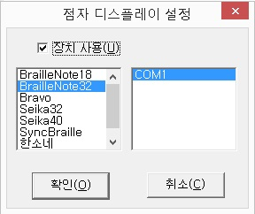

센스리더는 한소네 브레일에 대해 Braillenote와 마찬가지로 완벽한 점자 입출력 기능을 제공합니다.
센스리더의 음성출력을 점자 셀을 통하여 점자로 확인할 수 있으며, 한소네 브레일의 점자 키보드를 통한 입력도 가능합니다.
한소네 브레일과의 점자 출력 연결 기능은 시리얼, USB, 블루투스 등 세 가지 방식을 지원합니다.
이 기능을 정상적으로 사용하기 위해서는 한소네 브레일의 소프트웨어 버전이 4.2 이상이어야 합니다. 이전 버전 사용자라면 한소네 브레일의 소프트웨어 업그레이드를 먼저 실시해 주십시요.
다음의 방법에 따라 한소네 브레일을 연결합니다.
① 컴퓨터와 한소네 브레일을 연결하는 방식을 선택합니다.
시리얼의 경우 시리얼 케이블만을 컴퓨터와 한소네 브레일과 연결해 주면 되고, USB 연결 방식은 관련 드라이버를 컴퓨터에 설치해 주어야 합니다.
블루투스 연결의 경우 컴퓨터와 한소네 브레일에 USB 동글을 각각 설치해 주어야 합니다. USB 드라이버 설치 및 동글 설치에 관해서는 한소네 메뉴얼을 참고 바랍니다.
② 센스리더 윈도우를 열고 [일반] -> [점자 디스플레이 설정] 메뉴를 실행하여 점자 디스플레이 설정을 합니다.

센스리더는 USB 방식의 점자 디스플레이 장치인 '씽크 브레일'과의 연결 기능을 제공합니다.
씽크 브레일을 센스리더가 설치된 컴퓨터와 연결할 경우, 센스리더의 음성을 씽크 브레일의 점자를 통해 확인할 수 있어 정확한 정보 습득에 도움을 얻을 수 있습니다.
다음 과정에 따라 씽크 브레일 연결 기능을 설정합니다.
① 씽크 브레일의 드라이버를 컴퓨터에 설치하고, 두 장치를 USB 케이블로 연결합니다.
드라이버 설치에 관해서는 씽크 브레일 메뉴얼을 참고하세요.
② 센스리더 윈도우를 열고 [일반] -> [점자 디스플레이 설정] 메뉴를 실행하여 점자 디스플레이 설정을 합니다.
이에 관한 자세한 내용은 Ⅶ-1-18. 점자 디스플레이 설정 항목을 참고해 주십시요.
③ 센스리더의 음성출력이 씽크 브레일의 점자로 출력되는지 확인합니다.
만약, 점자가 깨져서 출력된다면 센스리더 윈도우를 열고 [점자] -> [점자 디스플레이 초기화] 메뉴 항목을 실행합니다.